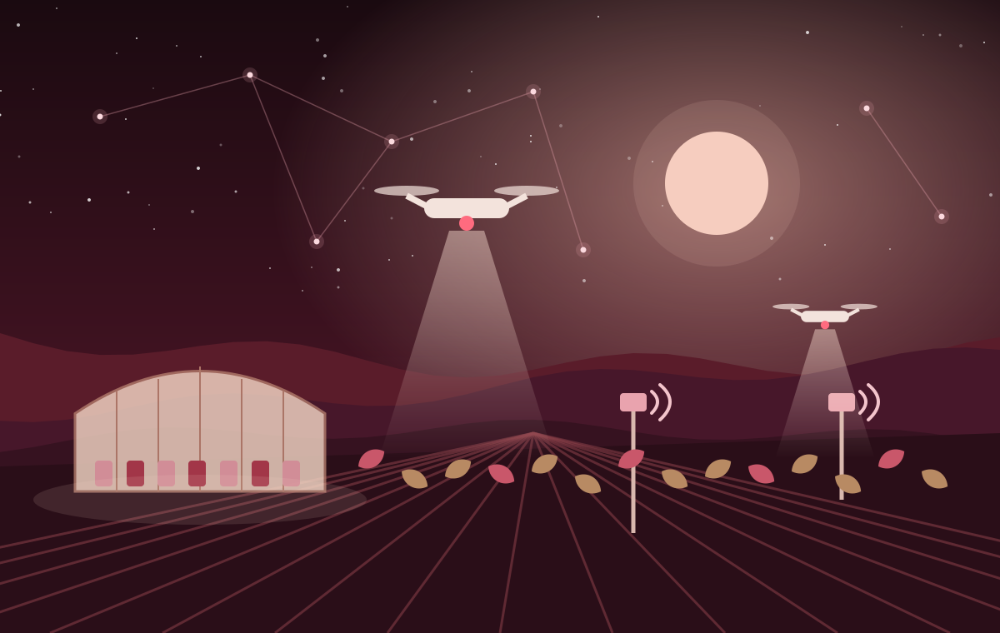
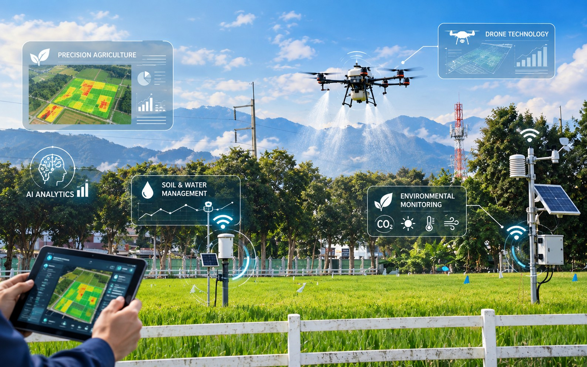
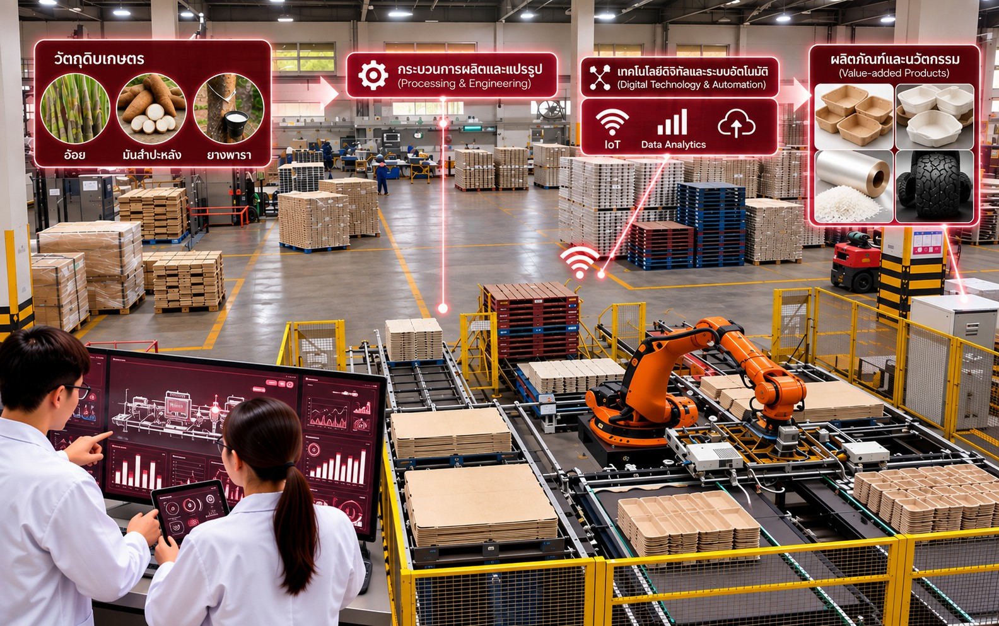

วิศวกรรมเกษตรสมัยใหม่
วิศวกรรมศาสตรมหาบัณฑิต (วศ.ม.) · มหาวิทยาลัยแม่โจ้
พัฒนานักวิจัย นักพัฒนา และวิศวกรนวัตกรรม ที่ใช้ AI, IoT, Big Data และระบบอัตโนมัติ ยกระดับระบบเกษตรและอุตสาหกรรมเกษตรให้มีประสิทธิภาพ ปลอดภัย และยั่งยืน

ข่าวล่าสุดของหลักสูตร
ห้าด้านที่สังเคราะห์จากกรอบวิชาชีพ CIGR
และความต้องการของผู้ใช้บัณฑิต
แผนไหนเหมาะกับคุณ
ตอบ 3 คำถาม ใช้เวลาไม่ถึงนาที
36 หน่วยกิตเท่ากัน ต่างกันที่เป้าหมาย
ทีมบริหารหลักสูตร
สิ่งที่พวกเขาพูดถึงหลักสูตร
บรรยากาศการเรียนรู้และกิจกรรมของหลักสูตร
เกี่ยวกับหลักสูตร
ปรัชญา วัตถุประสงค์ และผลลัพธ์การเรียนรู้ของหลักสูตรวิศวกรรมศาสตรมหาบัณฑิต สาขาวิชาวิศวกรรมเกษตรสมัยใหม่ (หลักสูตรปรับปรุง พ.ศ. 2569)
มุ่งผลิตนักวิจัย นักพัฒนา และวิศวกรนวัตกรรมด้านวิศวกรรมเกษตรสมัยใหม่ ที่มีความรู้เชิงลึก บูรณาการองค์ความรู้ข้ามศาสตร์ และปรับใช้เทคโนโลยีดิจิทัล เทคโนโลยีขั้นสูง และนวัตกรรมสีเขียวให้เหมาะสมกับบริบท
เพื่อพัฒนาและยกระดับระบบและนวัตกรรมในภาคการเกษตรและอุตสาหกรรมเกษตรให้มีประสิทธิภาพและปลอดภัยตามมาตรฐานสากล ควบคู่กับการยึดมั่นในคุณธรรม จริยธรรม และความรับผิดชอบต่อสังคมและสิ่งแวดล้อม

สู่มหาวิทยาลัยชั้นนำที่มีความเป็นเลิศทางการเกษตรในระดับนานาชาติ
หลักสูตรสนับสนุนแนวคิดเกษตรอัจฉริยะเพื่อสุขภาวะที่ยั่งยืน (Intelligent Well-being Agriculture: IWA) และเกษตรมูลค่าสูงของภาคเหนือ ตอบอุตสาหกรรมเป้าหมายทั้ง First S-Curve เช่น การแปรรูปผลผลิตเกษตรและเกษตรอัจฉริยะ และ New S-Curve เช่น หุ่นยนต์และเทคโนโลยีดิจิทัล
มหาบัณฑิตที่หลักสูตรมุ่งสร้าง
ประเมิน ออกแบบ และบูรณาการองค์ความรู้วิศวกรรมเกษตรสมัยใหม่ร่วมกับ AI, IoT และการวิเคราะห์ข้อมูล แก้ปัญหาวิศวกรรมเชิงซับซ้อนด้วยข้อมูลและงานวิจัย สื่อสารและทำงานร่วมกับผู้อื่น มีภาวะผู้นำ เรียนรู้ตลอดชีวิต และรับผิดชอบต่อสังคมและสิ่งแวดล้อม
วัตถุประสงค์ของหลักสูตร
ผลลัพธ์การเรียนรู้ของหลักสูตร (PLOs)
ระดับผลลัพธ์ · ด้านความรู้ (Anderson & Krathwohl, 2001): Ev ประเมินค่า, Cr สร้างสรรค์ · ด้านทักษะ (Simpson, 1972): Ad ปรับเปลี่ยน, Me ทำได้คล่องแคล่ว · ด้านจริยธรรมและลักษณะบุคคล (Krathwohl, 1964): Org จัดระบบคุณค่า, Va เห็นคุณค่า
จากจุดเด่นของหลักสูตรสู่ผลลัพธ์ของผู้เรียน
| จุดเด่น | กลุ่มความเชี่ยวชาญที่สนับสนุน | กลไกการจัดการเรียนรู้ | ผลลัพธ์ของผู้สำเร็จการศึกษา |
|---|
ข้อมูลหลักสูตร
- รหัสหลักสูตร
- 25590131100178
- ชื่อหลักสูตร
- หลักสูตรวิศวกรรมศาสตรมหาบัณฑิต สาขาวิชาวิศวกรรมเกษตรสมัยใหม่
Master of Engineering Program in Modern Agricultural Engineering - ชื่อปริญญา
- วิศวกรรมศาสตรมหาบัณฑิต (วิศวกรรมเกษตรสมัยใหม่)
วศ.ม. (วิศวกรรมเกษตรสมัยใหม่)
Master of Engineering (Modern Agricultural Engineering) · M.Eng. - รูปแบบ
- ปริญญาโท 2 ปี ภาษาไทยหรือภาษาอังกฤษ รับนักศึกษาไทยและต่างชาติ ให้ปริญญาสาขาเดียว
- กลุ่มสาขา ISCED
- 0719 Engineering and engineering trades, n.e.c.
- เปิดสอน
- ภาคการศึกษาที่ 2 ปีการศึกษา 2569
- ปรับปรุงจาก
- วศ.ม. สาขาวิชาวิศวกรรมเกษตร (หลักสูตรปรับปรุง พ.ศ. 2564)
การพิจารณาและอนุมัติ
| ที่ประชุม | ครั้งที่ / วันที่ |
|---|
อาชีพหลังสำเร็จการศึกษา
โครงสร้างหลักสูตรและรายวิชา
ทุกแผนเรียน 36 หน่วยกิต และเรียนรายวิชาไม่นับหน่วยกิต (7) หน่วยกิต ประเมินผลแบบ S/U พร้อมรายวิชาภาษาต่างประเทศตามเงื่อนไขของบัณฑิตศึกษา
เรียนอะไร ภาคการศึกษาไหน
( ) = รายวิชาไม่นับหน่วยกิต · วิชาเอกเลือกเลือกจากกลุ่มความเชี่ยวชาญ
รายวิชาทั้งหมด
| รหัส | รายวิชา | หน่วยกิต (บ-ป-ศ) | แผน |
|---|
บ-ป-ศ = ชั่วโมงบรรยาย-ปฏิบัติ-ศึกษาด้วยตนเองต่อสัปดาห์ · การเลือกวิชาเอกเลือก: เรียนในกลุ่มความเชี่ยวชาญเฉพาะด้านไม่น้อยกว่าร้อยละ 50 ของหน่วยกิตวิชาเอกเลือก ส่วนที่เหลือเลือกข้ามกลุ่มหรือรายวิชาบัณฑิตศึกษานอกสาขาได้ โดยความเห็นชอบของอาจารย์ที่ปรึกษาและคณะกรรมการบริหารหลักสูตร

การศึกษาเชิงบูรณาการกับการทำงาน
รายวิชา 20401515 จำนวน 6 หน่วยกิต ปฏิบัติงาน 180 ชั่วโมง ณ องค์กรหรือสถานประกอบการที่เกี่ยวข้อง ในชั้นปีที่ 2 ภาคการศึกษาที่ 1
- วิเคราะห์ปัญหาจริงเพื่อปรับปรุงกระบวนการ เพิ่มประสิทธิภาพ หรือลดต้นทุน
- จัดทำแผนดำเนินงาน งบประมาณ และรายงานผล
- เปรียบเทียบด้านประสิทธิภาพ ต้นทุน เวลา พลังงาน เศรษฐศาสตร์สิ่งแวดล้อม และความยั่งยืน
- เสนอแผนพัฒนาเชิงกลยุทธ์ต่อสถานประกอบการและหลักสูตร ภายใต้การดูแลของอาจารย์ที่ปรึกษาและที่ปรึกษาจากสถานประกอบการ
การเรียนการสอนและการประเมินผล
เรียนรู้จากโจทย์จริง วัดผลตามผลลัพธ์การเรียนรู้ และทวนสอบทุกรายวิชา
ผู้เรียนเป็นศูนย์กลาง
จัดการเรียนรู้เชิงรุกทุกรายวิชา และสอดแทรกพื้นฐาน AI เทคโนโลยีสีเขียว นวัตกรรม และความยั่งยืนในวิชาเอกบังคับ
โจทย์จากภาคเอกชน
ภาคเอกชน ศิษย์เก่า และผู้ประกอบการร่วมสอนและตั้งโจทย์วิจัยกับคณาจารย์และนักศึกษา
สื่อสารสู่สากล
สัมมนาค้นคว้างานตีพิมพ์ภาษาอังกฤษ สนับสนุนการนำเสนอและเผยแพร่ในเวทีนานาชาติ
ยืดหยุ่นสำหรับคนทำงาน
แผน 2 จัดการเรียนการสอนผสมทั้งออนไลน์และออนไซต์
วิทยานิพนธ์และการค้นคว้าอิสระ
- แต่งตั้งอาจารย์ที่ปรึกษาวิทยานิพนธ์
- ทบทวนวรรณกรรมและกำหนดหัวข้อวิจัย
- สอบโครงร่างวิทยานิพนธ์
ประเมินความเหมาะสมและความเป็นไปได้ของหัวข้อและระเบียบวิธีวิจัย
- ประเมินความก้าวหน้าทุกภาคการศึกษา
- สอบปากเปล่าวิทยานิพนธ์
กรรมการไม่ต่ำกว่า 3 คน มีผู้ทรงคุณวุฒิภายนอก และเปิดให้ผู้สนใจเข้ารับฟัง
- ประเมินรูปเล่มและเผยแพร่ผลงาน
- แต่งตั้งอาจารย์ที่ปรึกษา
- กำหนดหัวข้อจากปัญหาในสถานประกอบการหรือภาคสนาม
- เสนอโครงร่างต่ออาจารย์ที่ปรึกษา
- ประเมินความก้าวหน้าทุกภาคการศึกษา
- สอบประมวลความรู้และสอบการค้นคว้าอิสระ
กรรมการไม่ต่ำกว่า 2 คน และเปิดให้ผู้สนใจเข้ารับฟัง
- ประเมินรายงานและเผยแพร่ในช่องทางที่สืบค้นได้
สิ่งที่ต้องทำให้ครบก่อนจบ
| เกณฑ์ | แผน 1.1 | แผน 1.2 | แผน 2 |
|---|---|---|---|
| สอบผ่านภาษาอังกฤษตามหลักเกณฑ์ของมหาวิทยาลัย | ✓ | ✓ | ✓ |
| เรียนครบตามหลักสูตร รายวิชา S/U ต้องได้ S | ✓ | ✓ | ✓ |
| เกรดเฉลี่ยสะสมไม่ต่ำกว่า 3.00 และไม่มีรายวิชาต่ำกว่า C | – | – | ✓ |
| สอบประมวลความรู้ (ข้อเขียนและ/หรือปากเปล่า) | – | – | ✓ |
| สอบผ่านวิทยานิพนธ์หรือการค้นคว้าอิสระในระบบเปิด | วิทยานิพนธ์ | วิทยานิพนธ์ | การค้นคว้าอิสระ |
| การเผยแพร่ผลงาน | ตีพิมพ์หรือได้รับการตอบรับในวารสารระดับชาติหรือนานาชาติที่มีคุณภาพตามเกณฑ์ อย่างน้อย 2 เรื่อง หรือ ตีพิมพ์ในวารสาร 1 เรื่อง และนำเสนอในที่ประชุมวิชาการระดับชาติหรือนานาชาติพร้อม Full Paper ใน Proceedings 1 เรื่อง | ตีพิมพ์หรือได้รับการตอบรับในวารสารระดับชาติหรือนานาชาติที่มีคุณภาพตามเกณฑ์ อย่างน้อย 1 เรื่อง หรือ นำเสนอในที่ประชุมวิชาการระดับชาติหรือนานาชาติพร้อม Full Paper ใน Proceedings 1 เรื่อง | เผยแพร่ผลงานค้นคว้าอิสระในช่องทางที่สืบค้นได้ |
| ผู้รับทุน ปฏิบัติตามเงื่อนไขของทุนให้เสร็จก่อนยื่นสำเร็จการศึกษา | ✓ | ✓ | ✓ |
ทวนสอบผลลัพธ์การเรียนรู้ทุกรายวิชา
ทวนสอบรายวิชาที่เปิดสอนครบ 100% ทุกภาคการศึกษา ตามประกาศมหาวิทยาลัยแม่โจ้ว่าด้วยระบบและกลไกการทวนสอบผลลัพธ์การเรียนรู้ อาจารย์ผู้รับผิดชอบหลักสูตรรายงานผลต่อคณะกรรมการวิชาการ โดยใช้การประเมินที่หลากหลาย เช่น งานปฏิบัติ โครงการวิจัย การประเมินเชิงผลงาน และการสอบเชิงสมรรถนะ
ติดตามผลลัพธ์ระยะยาว
- สำรวจภาวะการมีงานทำ รายได้ และการนำความรู้ไปใช้
- สำรวจความพึงพอใจของผู้ใช้บัณฑิต
- ติดตามความก้าวหน้าในอาชีพของศิษย์เก่า
- จัดประชาคมศิษย์เก่า นายจ้าง และผู้ทรงคุณวุฒิ
ระบบการให้ระดับคะแนน
| สัญลักษณ์ | A | B+ | B | C+ | C | D+ | D | F |
|---|---|---|---|---|---|---|---|---|
| ระดับคะแนน | 4.00 | 3.50 | 3.00 | 2.50 | 2.00 | 1.50 | 1.00 | 0.00 |
รายวิชาไม่นับหน่วยกิตประเมินเป็น S (พอใจ) หรือ U (ไม่พอใจ) ตามข้อบังคับมหาวิทยาลัยแม่โจ้ว่าด้วยการศึกษาระดับบัณฑิตศึกษา พ.ศ. 2569 และเทียบโอนหน่วยกิตแบบคลังหน่วยกิตได้ตามประกาศของมหาวิทยาลัย
เอกสารที่เกี่ยวข้องกับการศึกษาระดับบัณฑิตศึกษา
ข้อบังคับ ประกาศ ปฏิทินการศึกษา แบบฟอร์ม และระบบออนไลน์ที่นักศึกษาและผู้สมัครใช้บ่อย
การรับสมัครนักศึกษา
เปิดรับนักศึกษาไทยและต่างชาติ ภาคการศึกษาที่ 2 ปีการศึกษา 2569 แผนการรับ 10 คนต่อปีการศึกษา
ยังไม่แน่ใจว่าจะสมัครแผนไหน
ตอบ 3 คำถาม แล้วดูแผนที่เหมาะกับคุณ
เลือกแผนที่ตรงกับคุณ
| คุณสมบัติ | แผน 1.1 | แผน 1.2 | แผน 2 |
|---|---|---|---|
| วุฒิการศึกษา | ปริญญาตรีหรือเทียบเท่า หรือสาขาอื่นที่เกี่ยวข้อง จากสถาบันที่ ก.พ. รับรอง | ||
| เกรดเฉลี่ยสะสม (GPAX) | ไม่น้อยกว่า 3.00 หรือ 2.75 พร้อมผลงานวิจัยตีพิมพ์ระดับชาติ 1 เรื่อง | ไม่น้อยกว่า 2.50 หรือตามที่อาจารย์ผู้รับผิดชอบหลักสูตรพิจารณา | ไม่น้อยกว่า 2.25 |
| ประสบการณ์ทำงาน | – | – | ทำงานในสถานประกอบการด้านวิศวกรรมเกษตร อุตสาหกรรมเกษตร หรือที่เกี่ยวข้อง ไม่น้อยกว่า 1 ปี |
| ข้าราชการ พนักงานมหาวิทยาลัย หรือรัฐวิสาหกิจ | หนังสืออนุญาตให้ศึกษาต่อจากผู้บังคับบัญชาระดับกรมหรือเทียบเท่า | – | หนังสืออนุญาตให้ศึกษาต่อจากผู้บังคับบัญชาระดับกรมหรือเทียบเท่า |
| ผู้สมัครชาวต่างชาติ | ใบรับรองคุณวุฒิจากสถาบันที่ได้รับการรับรองหรือจากสถานทูตของประเทศนั้น | ||
เป็นไปตามเกณฑ์มาตรฐานหลักสูตรระดับบัณฑิตศึกษา พ.ศ. 2565 และข้อบังคับมหาวิทยาลัยแม่โจ้ว่าด้วยการศึกษาระดับบัณฑิตศึกษา กรณีอื่นอยู่ในดุลยพินิจของคณะกรรมการดำเนินการสอบคัดเลือก
อัตราเดียวทุกแผน
25,000 บาท
50,000 บาท
2 ภาคการศึกษา
100,000 บาท
ไม่รวมรายวิชาปรับพื้นฐานและค่าใช้จ่ายส่วนตัว อัตราเป็นไปตามประกาศมหาวิทยาลัย
ห้าขั้นตอนสู่การเป็นนักศึกษา
- เลือกแผนการเรียน
วิจัยเต็มตัว (1.1) เรียนรายวิชาควบวิจัย (1.2) หรือวิชาชีพสำหรับคนทำงาน (2)
- ปรึกษาอาจารย์ในหลักสูตร
พูดคุยหัวข้อวิจัยที่สนใจ โดยเฉพาะผู้สมัครแผน 1.1
- สมัครผ่านระบบรับสมัครบัณฑิตศึกษา มหาวิทยาลัยแม่โจ้
ตามกำหนดการรับสมัครของแต่ละรอบ [ใส่ลิงก์ระบบรับสมัครและกำหนดการ]
- สอบสัมภาษณ์
นำเสนอแนวคิดการวิจัยหรือประสบการณ์ทำงานที่เกี่ยวข้อง
- ปฐมนิเทศ
ชี้แจงข้อบังคับ ระยะเวลา กระบวนการวิทยานิพนธ์ และช่องทางร้องเรียนหรืออุทธรณ์
เราช่วยให้คุณเรียนจบตามแผน
อาจารย์ที่ปรึกษาประจำตัว
ให้คำปรึกษาทั้งด้านวิชาการ วิชาชีพ การใช้ชีวิต เป้าหมายชีวิต และการเตรียมพร้อมเข้าสู่ตลาดแรงงาน
ปรับพื้นฐานสำหรับผู้มาจากสาขาอื่น
เรียนรายวิชาพื้นฐานเพิ่มเติมแบบไม่นับหน่วยกิต และเตรียมความพร้อมสอบภาษาต่างประเทศตามเงื่อนไขของบัณฑิตศึกษา
ทุนการศึกษาและทุนวิจัย
แจ้งช่องทางทุนทั้งภายในและภายนอก และจัดกิจกรรมฝึกเขียนข้อเสนอโครงการวิจัย
คำถามก่อนสมัคร
คำตอบอ้างอิงจากเอกสารหลักสูตรฉบับผ่านสภามหาวิทยาลัย
คณาจารย์ในหลักสูตร
อาจารย์ประจำหลักสูตร 8 คน สำเร็จการศึกษาระดับปริญญาเอกทุกคน และอาจารย์ผู้สอน 21 คน จากสาขาวิศวกรรม พอลิเมอร์ พืชศาสตร์ เทคโนโลยีสารสนเทศ และการจัดการ
ทีมบริหารหลักสูตร
ความเชี่ยวชาญของอาจารย์ประจำหลักสูตร
อาจารย์ผู้สอนในหลักสูตร 21 คน
ห้องปฏิบัติการและสิ่งสนับสนุนการเรียนรู้
อาคารเรียนรวมสาขาวิศวกรรมศาสตร์ อาคารปฏิบัติการทางวิศวกรรม และอาคารปฏิบัติการเทคโนโลยียางและพอลิเมอร์ พร้อมฟาร์มทดลองของมหาวิทยาลัย
7 ห้องปฏิบัติการรองรับงานวิจัยและวิทยานิพนธ์
เครื่องมือที่จัดหาใหม่ 3 ปีงบประมาณล่าสุด
| ปีงบประมาณ | รายการ |
|---|
ห้องบรรยายเฉพาะบัณฑิตศึกษา
รองรับนักศึกษาแต่ละชั้นปีได้เพียงพอ พร้อมห้องพักนักศึกษาที่มีโต๊ะทำงานรายบุคคลและ Wi-Fi ความเร็วสูง
ห้องประชุมย่อย 2 ห้อง
ความจุ 20–25 คน ใช้นำเสนองาน สอบวิทยานิพนธ์ และจัดแสดงผลงาน พร้อมโปรเจกเตอร์และโสตทัศนูปกรณ์
ห้องสมุดคณะและ Digital Library
ชั้น 2 อาคารเรียนรวมสาขาวิศวกรรมศาสตร์ เปิดวันราชการ 08.30–16.30 น. เชื่อมฐานข้อมูลวารสาร e-Book และวิทยานิพนธ์ของสำนักหอสมุด
ข่าวประชาสัมพันธ์และกิจกรรม
ความเคลื่อนไหวของหลักสูตร การรับสมัคร และกิจกรรมการเรียนรู้
ข่าวทั้งหมด
กิจกรรมของหลักสูตร
การบริหารและพัฒนาหลักสูตร
หลักสูตรรับฟังผู้มีส่วนได้ส่วนเสีย ติดตามผลการดำเนินงานทุกปี และนำผลมาปรับปรุงอย่างต่อเนื่อง ตามเกณฑ์มาตรฐานหลักสูตรระดับบัณฑิตศึกษา พ.ศ. 2565
หลักสูตรนี้ออกแบบจากความต้องการจริง
14
สถานประกอบการและผู้ใช้บัณฑิต ตอบแบบสอบถาม 10 ราย และให้สัมภาษณ์ 4 ราย
17
ศิษย์เก่าที่ให้สัมภาษณ์และตอบแบบสอบถาม
4
นักศึกษาปัจจุบันที่ให้สัมภาษณ์
19
กลุ่มผู้มีส่วนได้ส่วนเสียที่วิเคราะห์ความต้องการจำเป็นสู่ PLOs
ความต้องการจำเป็นที่ได้รับ
- เข้าใจและวิเคราะห์บทบาทของ IoT, AI, Big Data และ Automation ในเกษตรอัจฉริยะและอุตสาหกรรมเกษตร
- เข้าใจมาตรฐานสากลด้านคุณภาพและความปลอดภัยของผลิตภัณฑ์เกษตร
- ออกแบบและพัฒนาระบบอัตโนมัติ เครื่องจักรกล และอุปกรณ์ เพื่อประสิทธิภาพและความยั่งยืน
- บูรณาการเทคโนโลยีสีเขียวเข้ากับกระบวนการผลิต และใช้ทรัพยากรอย่างคุ้มค่า
- วิเคราะห์และบริหารข้อมูลด้วย Data Analytics เพื่อการวางแผนและตัดสินใจ
- ทักษะภาษาอังกฤษ ภาวะผู้นำ และความเป็นผู้ประกอบการ
องค์กรที่ร่วมให้ข้อมูล
วางแผน ดำเนินการ ตรวจสอบ และปรับปรุง
วางแผน
กำหนด PLOs จากความต้องการของผู้มีส่วนได้ส่วนเสีย และวางกรอบการปรับปรุงหลักสูตรล่วงหน้า 4 ปี
ดำเนินการ
จัดการเรียนรู้เชิงรุกทุกรายวิชา WIL ในสถานประกอบการ และ Sandbox ร่วมภาคเอกชน
ตรวจสอบ
ทวนสอบรายวิชา 100% ประชุมอาจารย์ผู้รับผิดชอบหลักสูตรร่วมกับอาจารย์ประจำหลักสูตรทุกเดือน และประเมินคุณภาพอย่างน้อยปีละ 1 ครั้ง
ปรับปรุง
ทบทวนหลักสูตรทุกปี เชิญผู้ทรงคุณวุฒิวิพากษ์ และนำผลประชาคมผู้มีส่วนได้ส่วนเสียมาปรับปรุง
ตัวบ่งชี้ผลการดำเนินงานของหลักสูตร
| # | ตัวบ่งชี้ | หน่วย | เป้าหมาย | 2569 | 2570 | 2571 |
|---|
หลักสูตรปรับปรุงเริ่มรับนักศึกษาภาคการศึกษาที่ 2/2569 ผลการดำเนินงานจะเผยแพร่เมื่อสิ้นปีการศึกษา พร้อมแนวโน้มและการเปรียบเทียบกับหลักสูตรใกล้เคียง
แผนรับและผู้สำเร็จการศึกษา 5 ปี
| ปีการศึกษา | 2569 | 2570 | 2571 | 2572 | 2573 |
|---|---|---|---|---|---|
| ชั้นปีที่ 1 | 10 | 10 | 10 | 10 | 10 |
| ชั้นปีที่ 2 | – | 10 | 10 | 10 | 10 |
| รวม | 10 | 20 | 20 | 20 | 20 |
| คาดว่าจะสำเร็จการศึกษา | – | – | 10 | 10 | 10 |
เข้าถึงข้อมูลหลักสูตรได้หลายช่องทาง
เผยแพร่ข้อมูลหลักสูตรผ่านเว็บไซต์คณะ เพจของหลักสูตร แผ่นพับ การออกบูธ และรายละเอียดรายวิชา (OBE 3) บนเว็บไซต์สำนักบริหารและพัฒนาวิชาการ แจ้งอาจารย์ทุกคนผ่านที่ประชุมคณะกรรมการประจำหลักสูตรและกลุ่มไลน์อาจารย์
สามช่องทางสำหรับนักศึกษา
แบบฟอร์มอุทธรณ์ร้องทุกข์บนเว็บไซต์คณะ
คณะแต่งตั้งกรรมการร้องทุกข์เพื่อพิจารณาเรื่องที่ได้รับ
ระบบทะเบียนและประมวลผล
เขียนความเห็นหรือข้อร้องเรียนระหว่างประเมินการสอน รองคณบดีฝ่ายวิชาการตรวจสอบและนำเข้าที่ประชุมคณะกรรมการฝ่ายวิชาการ
คำร้องขอดูผลการศึกษา
มีคนกลางร่วมตรวจสอบและสังเกตการณ์การพิจารณาผลการศึกษา
ติดต่อหลักสูตร
สอบถามการสมัคร ให้ข้อเสนอแนะ หรือร้องเรียน หลักสูตรนำทุกเรื่องเข้าที่ประชุมประจำเดือนของอาจารย์ผู้รับผิดชอบหลักสูตร
สำนักงานหลักสูตร
- ที่อยู่
- คณะวิศวกรรมและอุตสาหกรรมเกษตร มหาวิทยาลัยแม่โจ้ ต.หนองหาร อ.สันทราย จ.เชียงใหม่ 50290
- ประธานหลักสูตร
- ผศ.ดร.ทิพาพร คำแดง
tipapon@mju.ac.th
053-875019 - [ใส่ลิงก์เพจหลักสูตร]
- LINE
- [ใส่ LINE OA]